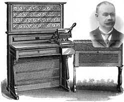
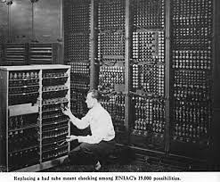

Previous and current concepts of technology.
In the world we live in today we have seen just how far computers have evolved, with previous iterations of devices made to compute data starting to grow in popularity in the commercial industries such as the UNIVAC to evolving into the smartphones and desktops we use today. This has led to the pursuit of stronger computing times and more conveient models, chasing such growth gave way to the development of tech superpowers we know today that distribute most of the electronics that we know and love.

Dr.Herman Hollerith's punch card tabulating machine and sorter was the first punch card reader, this read data off the punch cards and processed the statistics in a more efficient way than by hand.
The use of this was proven by its ability to cut down the 8 years it took to gather statistics for the American 1880 census to only 6 years for the 1890 census.
Later in 1896 Hollerith formed the Tabulating Machine Company which allowed him to lease his invention out to the world, many insurance companies and census bureaus around the world purchased it as it allowed for easier data collection and proccesing.
In 1911 Hollerith's company and 4 others were merged into the Computing-Tabulating-Recording company and in little time the company was revamed as International Business Machines or IBM as we know it today.

The 1st generation of computers were humongous masses of machines that took up entire rooms, these used vacuum tubes for circuitry and to preform digital computations, magnetic drums were used for storage.
These computers had to be physically rewired to reprogram them, this meant it would take days to wire them and then several more days to check the wiring and make sure it's correct.
The way these early computers had data inputted was paper punch cards, paper tape, and magnetic tape, these allowed the data to be processed by the machine and be outputted onto magnetic tape or printed onto paper.
ENIAC or the Electronic Numerical Integrator and Computer was the first general purpose computer that was programmable, it was designed to calculate artillery firing tables for the U.S. army.
The significance of the computer shined as it was able to cut down the 40 hours it took for someone to calculate the optimal settings to fire the artillery under set conditions to under 2 minutes.
UNIVAC or Universal Automatic Computer was developed for the U.S. census bureau to gather the statistics of the American census, it was used to analyze votes for the 1952 presidential election and predicted the Eisenhower win over Stevenson. Later the UNIVAC became the first computer for general commercial use.

The 2nd generation of computers started to come around once the transistor, a device made of semiconductor which allowed the ability to open and close electronic circuits replaced the vacuum tube transistors.
This was major as it allowed computers to be made without the restriction of vacuum tubes which caused the often massive size of these computors due to the power consumption, this paved the way for smaller, more compact computers with better computing time and less power requirments.
Data and programs were still inputed with punch cards and magnetic tape, the output was on punch cards and paper printouts.
The IBM 608 transistor calculator is considered the first computing machine that was commercially marketed as it had replaced all vacuum tubes with transistors, this marked the movement of a technological advancement in computing technology.

The third generation of computers replaced the transistors with integrated circuits, an integrated circuit is a small object made of semiconductor that has thousands of miniature transistors, resistors, and capacitors as well as the circuitry inside of it.
This allowed the hardware in computers to be upgraded and allow way better computing time as it was reduced from and boosted the general efficiency, with less heat generated and less power consumption.
To input the instructions for the computer punch cards were still used but were seen as inefficient, to fix this issue different input and output devices were introduced and became the more popular choice.
The keyboard acted as an input machine with straightforward, convenient use that made it easy to use everyday, same with the monitor that provided the output of the instructions by showing them on a digital screen.
The introduction of the keyboard and monitor pioneered the way of convenient and everyday use, as seen by the IBM 360.
The IBM 360 were a series of computers that were developed to suit both scientific and commercial applications, the 360 series had a wide variety of systems to choose from with each being ranged from smallest to largest with matching power and preformance for each size with the range from lowest preformance to the highest preformance.
The important and unique thing about these computers is that they all ran under the same instruction set, this allowed for a more open market on the computers compared to other providers as customers could buy the cheapest model and could upgrade the software without going through the trouble of rewriting it unlike other computers at that time.

The fourth generation of computers was pioneered once VLSI or Very Large Scale Integration was used to create integrated circuits, VLSI was the process of combining millions to billions of MOSFET's or Metal Oxide Semiconductor Field-Effect transistors onto a single chip.
This breakthrough allowed the creation of the microprocessor, the microprocessor allowed for enhanced capabilities across all fields of computing as it contained the core proccesing capabilities on one small chip.
Computer parts had been greatly enhanced over the years as they have become more powerful and compact allowing them to be contained in a small chasis, this marked the era of desktops.
The more convenient and portable computers quickly took over the market as the proccesing power they had was often much more efficient than the giant computers used for commercial and scientific use, the compact feature of these computers shined as they were bought for personal use.
The original IBM PC or IBM personal computer was the first microcomputer that IBM produced, it contained the Intel 8088 which allowed IBM to have a very optimal computing power and keep in the competitive market price range.
The design team had many computer enthusiasts who owned their own computers, they opted convenience and an open architectural design with the capability of being able to upgrade the pc and switch in parts with ease.
The release of the IBM PC was a smashing success selling over 750 000 units bringing in the worldwide recognition towards microcomputers and coining the term PC, the everyday computers we know today are the popular microcomputers which have developed into even smaller microcomputers with proccesing power we never once could have even imagined when developing the ENIAC.